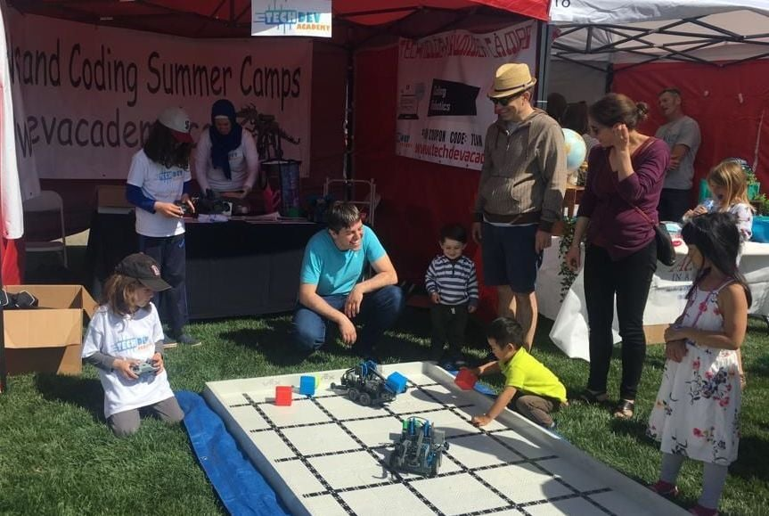

TECHDEV Academy, California, USA

- I assisted in teaching interdisciplinary research project-based courses on Python, image and data analysis, statistics, and cancer biology to a group of international high school students.
- Together with other Mentors, I trained students to prepare scientific reports, analyze raw microscopic data, prepare images for trackmate tool by using different filters in ImageJ
More information about me as a Mentor can be found here
INOSPIN Company, Astana, Kazakhstan
I launched the management system for the partnering programs from innovative pharma companies to design specific, consumer-oriented projects on the therapeutic strategies for various diseases including, cytopenia, rare neurological, and dermato-oncological indications.
Also, I collaborated with researchers, technology transfer offices, and leading companies such as Sanofi, Mitsubishi Tanabe Pharma, Almirall to implement open innovation programs.